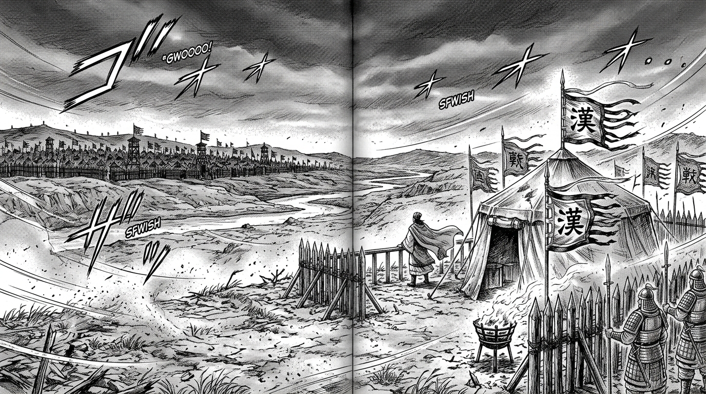
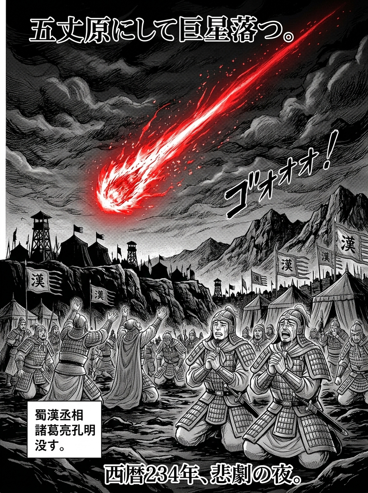
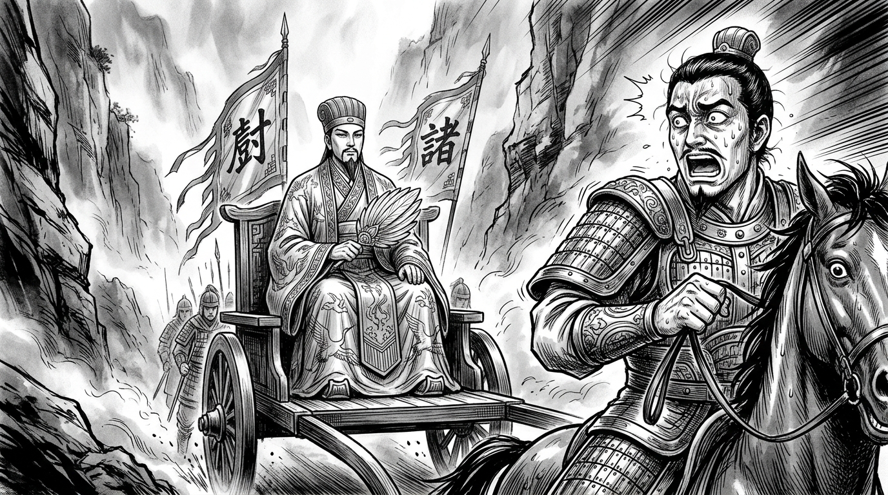

第1話「巨星落つ」
五丈原の秋風 ― 諸葛孔明の最期と、残された者たち
シーン1：五丈原の秋風（P.1〜P.4）

蜀漢の丞相・諸葛亮孔明による五度目の北伐。
長安を目前に望む五丈原の乾いた台地に、張り詰めた静寂が漂っていた。
「……二十棒以上の罰は、すべて私自ら裁断せねばならぬ……軍規の乱れは、即ち国の乱れぞ……」
白い袖口に鮮血が飛び散り、羽扇が手から床へ転がり落ちる。【カラン……】
「丞相―――――ッ！！」
シーン2：兵法二十四編の授与（P.5〜P.12）
「我が一生の心血を注いだ兵法のすべてをこの書に記した。
蜀の群臣の中で、これを受け継ぎ、真に生かせる男は――伯約、そなた一人だ」
「わ、私ごとき降将に、これほどの重責を……！ 必ずや漢室を復興してみせまする！」
「よいか伯約。心に深く刻め。
『兵は凶器なり。戦は不吉の業なり』
勝ちを焦るあまり、民を泣かせ、国を傾けることだけは決してしてはならぬ……！」
シーン3：後継の密命と魏延の火種（P.13〜P.20）
「丞相一人が身罷られたとて、天下の大業を捨て去る道理があるか！
楊儀ごとき文官どもの指図など受けて退却してたまるか。
俺が残る全軍を率い、司馬懿の首を獲って長安へ駆け抜けてくれるわ！」
シーン4：巨星墜つ（P.21〜P.28）
「先帝……いま、おそばへ参ります――」

建興十二年八月二十三日、諸葛孔明 陣没。享年五十四。
シーン5：司馬懿の出撃と木像孔明（P.29〜P.40）

「こ、孔明――――ッ！？
罠だ！ 計略だ！ 孔明は生きておったのだ！！
退けぇぇぇッ！ 全軍、退却せよ！！」
「死せる孔明、生ける仲達を走らす、か……。だが、これで天下はわしのものだ」
シーン6：エピローグ・乱世の深淵へ（P.41〜P.48）
退路の桟道を焼き払う魏延軍の劫火
それは、志と義によって動いた「英雄たちの三国志」の幕引きであった。
生き残った者たちを待ち受けるのは、より冷酷な裏切りと、血で血を洗う権力抗争。
いま、真の三国志の扉が開く――。